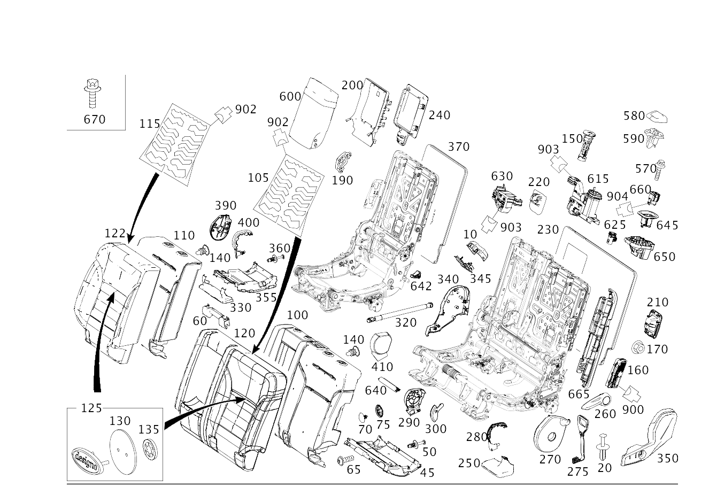

| № | Артикул | Название | Кол. | Примечание |
|---|---|---|---|---|
| 10 | A 166 545 05 03 | Крышка корпуса (ABDECKUNG GEHAEUSE) | 1 | МЕСТО РАЗЪЕДИН. СИДЕНЬЯ, СЛЕВА |
| 10 | A 166 545 05 03 | Крышка корпуса (ABDECKUNG GEHAEUSE) | 1 | МЕСТО РАЗЪЕДИНЕНИЯ СИДЕНЬЯ, СПРАВА |
| 20 | A 000 990 54 92 | Заклепка | 1 | КРЫШКА НА РАМЕ СИД.; 6 MM |
| 20 | A 000 990 54 92 | Заклепка | 1 | ЗАДНЕЕ ЛЕВОЕ СИДЕНЬЕ; 6 MM |
| 20 | A 000 990 54 92 | Заклепка | 1 | КОЖУХ НА РАМЕ СИДЕНЬЯ,СЛЕВА; 6 MM |
| 20 | A 000 990 54 92 | Заклепка | 2 | КОЖУХ НА РАМЕ СИДЕНЬЯ,СПРАВА; 6 MM |
| 20 | A 000 990 54 92 | Заклепка | 1 | ЗАДН. СИДЕНЬЕ СПРАВА; 6 MM |
| 45 | A 166 921 52 86 | Крышка (ABDECKUNG) | 1 | КАРКАС СИД. СЛЕВА |
| 50 | A 000 990 54 92 | Заклепка | 4 | КОЖУХ НА РАМЕ СИДЕНЬЯ,СЛЕВА; 6 MM |
| 60 | A 166 921 40 00 | Накладка каркаса сиденья | 1 | ЗАДНЕЕ ЛЕВОЕ СИДЕНЬЕ |
| 60 | A 166 921 04 00 | Накладка каркаса сиденья | 1 | ЗАДН. СИДЕНЬЕ СПРАВА |
| 65 | A 001 984 56 29 | Болт с головкой торкс (SECHSRUNDSCHRAUBE) | 2 | КРЕПЛЕНИЕ КРЫШКИ СЛЕВА; 4X12 |
| 70 | A 002 997 37 86 | Пробка (STOPFEN) | 2 | Облицовка подушки сиденья слева |
| 70 | A 002 997 37 86 | Пробка (STOPFEN) | 2 | Облицовка подушки сиденья справа |
| 75 | A 000 994 65 11 | Стопор болта (BOLZENSICHERUNG) | 2 | Крепление подушки сиденья к каркасу сиденья слева |
| 75 | A 000 994 65 11 | Стопор болта (BOLZENSICHERUNG) | 2 | Крепление подушки сиденья к каркасу сиденья справа |
| 100 | A 166 920 43 00 | Накладка спинки сиденья (AUFLAGE FONDLEHNE) | 1 | ЗАДНЯЯ СПИНКА ЛЕВАЯ |
| 100 | A 166 920 47 00 | Накладка спинки сиденья (AUFLAGE FONDLEHNE) | 1 | ЗАДНЯЯ СПИНКА ЛЕВАЯ |
| 100 | A 166 920 17 16 | Накладка спинки сиденья (AUFLAGE FONDLEHNE) | 1 | ЗАДНЯЯ СПИНКА ЛЕВАЯ |
| 100 | A 166 920 19 16 | Накладка спинки сиденья (AUFLAGE FONDLEHNE) | 1 | ЗАДНЯЯ СПИНКА ЛЕВАЯ |
| 105 | A 166 820 09 98 | Подогрев сидений (SITZHEIZUNG) | 1 | ЗАДНЕЕ ЛЕВОЕ СИДЕНЬЕ |
| 110 | A 166 920 44 00 | Накладка спинки сиденья (AUFLAGE FONDLEHNE) | 1 | ЗАДН. СИДЕНЬЕ СПРАВА |
| 110 | A 166 920 48 00 | Накладка спинки сиденья (AUFLAGE FONDLEHNE) | 1 | ЗАДН. СИДЕНЬЕ СПРАВА |
| 110 | A 166 920 18 16 | Накладка спинки сиденья (AUFLAGE FONDLEHNE) | 1 | ЗАДН. СИДЕНЬЕ СПРАВА |
| 110 | A 166 920 20 16 | Накладка спинки сиденья (AUFLAGE FONDLEHNE) | 1 | ЗАДН. СИДЕНЬЕ СПРАВА |
| 115 | A 166 820 09 98 | Подогрев сидений (SITZHEIZUNG) | 1 | ЗАДН. СИДЕНЬЕ СПРАВА |
| 120 | A 166 920 03 58 | Обивка спинки сиденья | 1 | ЗАДНЕЕ ЛЕВОЕ СИДЕНЬЕ |
| 120 | A 166 920 35 14 | Обивка спинки сиденья | 1 | ЗАДНЕЕ ЛЕВОЕ СИДЕНЬЕ |
| 120 | A 166 920 21 28 | Обивка спинки сиденья (BEZUG FONDLEHNE) | 1 | ЗАДНЕЕ ЛЕВОЕ СИДЕНЬЕ |
| 120 | A 166 920 25 28 | Обивка спинки сиденья (BEZUG FONDLEHNE) | 1 | ЗАДНЕЕ ЛЕВОЕ СИДЕНЬЕ |
| 120 | A 166 920 23 28 | Обивка спинки сиденья (BEZUG FONDLEHNE) | 1 | ЗАДНЕЕ ЛЕВОЕ СИДЕНЬЕ |
| 120 | A 166 920 27 28 | Обивка спинки сиденья (BEZUG FONDLEHNE) | 1 | ЗАДНЕЕ ЛЕВОЕ СИДЕНЬЕ |
| 120 | A 166 920 07 58 | Обивка спинки сиденья | 1 | ЗАДНЕЕ ЛЕВОЕ СИДЕНЬЕ |
| 120 | A 166 920 29 28 | Обивка спинки сиденья (BEZUG FONDLEHNE) | 1 | ЗАДНЕЕ ЛЕВОЕ СИДЕНЬЕ |
| 120 | A 166 920 33 28 | Обивка спинки сиденья (BEZUG FONDLEHNE) | 1 | ЗАДНЕЕ ЛЕВОЕ СИДЕНЬЕ |
| 120 | A 166 920 31 28 | Обивка спинки сиденья (BEZUG FONDLEHNE) | 1 | ЗАДНЕЕ ЛЕВОЕ СИДЕНЬЕ |
| 120 | A 166 920 35 28 | Обивка спинки сиденья (BEZUG FONDLEHNE) | 1 | ЗАДНЕЕ ЛЕВОЕ СИДЕНЬЕ |
| 120 | A 166 920 41 14 | Обивка спинки сиденья | 1 | ЗАДНЕЕ ЛЕВОЕ СИДЕНЬЕ |
| 120 | A 166 920 37 28 | Обивка спинки сиденья (BEZUG FONDLEHNE) | 1 | ЗАДНЕЕ ЛЕВОЕ СИДЕНЬЕ |
| 120 | A 166 920 41 28 | Обивка спинки сиденья (BEZUG FONDLEHNE) | 1 | ЗАДНЕЕ ЛЕВОЕ СИДЕНЬЕ |
| 120 | A 166 920 39 28 | Обивка спинки сиденья (BEZUG FONDLEHNE) | 1 | ЗАДНЕЕ ЛЕВОЕ СИДЕНЬЕ |
| 120 | A 166 920 43 28 | Обивка спинки сиденья (BEZUG FONDLEHNE) | 1 | ЗАДНЕЕ ЛЕВОЕ СИДЕНЬЕ |
| 120 | A 166 920 01 38 | Обивка спинки сиденья | 1 | ЗАДНЕЕ ЛЕВОЕ СИДЕНЬЕ |
| 120 | A 166 920 05 38 | Обивка спинки сиденья (BEZUG FONDLEHNE) | 1 | ЗАДНЕЕ ЛЕВОЕ СИДЕНЬЕ |
| 120 | A 166 920 21 21 | Обивка спинки сиденья (BEZUG FONDLEHNE) | 1 | ЗАДНЕЕ ЛЕВОЕ СИДЕНЬЕ |
| 120 | A 166 920 25 19 | Обивка спинки сиденья (BEZUG FONDLEHNE) | 1 | ЗАДНЕЕ ЛЕВОЕ СИДЕНЬЕ |
| 120 | A 166 920 25 19 | Обивка спинки сиденья (BEZUG FONDLEHNE) | 1 | ЗАДНЕЕ ЛЕВОЕ СИДЕНЬЕ |
| 120 | A 166 920 57 36 | Обивка спинки сиденья (BEZUG FONDLEHNE) | 1 | ЗАДНЕЕ ЛЕВОЕ СИДЕНЬЕ |
| 120 | A 166 920 03 38 | Обивка спинки сиденья | 1 | ЗАДНЕЕ ЛЕВОЕ СИДЕНЬЕ |
| 120 | A 166 920 07 38 | Обивка спинки сиденья (BEZUG FONDLEHNE) | 1 | ЗАДНЕЕ ЛЕВОЕ СИДЕНЬЕ |
| 120 | A 166 920 45 28 | Обивка спинки сиденья (BEZUG FONDLEHNE) | 1 | ЗАДНЕЕ ЛЕВОЕ СИДЕНЬЕ |
| 120 | A 166 920 49 28 | Обивка спинки сиденья (BEZUG FONDLEHNE) | 1 | ЗАДНЕЕ ЛЕВОЕ СИДЕНЬЕ |
| 120 | A 166 920 47 28 | Обивка спинки сиденья (BEZUG FONDLEHNE) | 1 | ЗАДНЕЕ ЛЕВОЕ СИДЕНЬЕ |
| 120 | A 166 920 51 28 | Обивка спинки сиденья (BEZUG FONDLEHNE) | 1 | ЗАДНЕЕ ЛЕВОЕ СИДЕНЬЕ |
| 120 | A 166 920 37 14 | Обивка спинки сиденья | 1 | ЗАДНЕЕ ЛЕВОЕ СИДЕНЬЕ |
| 120 | A 166 920 27 19 | Обивка спинки сиденья (BEZUG FONDLEHNE) | 1 | ЗАДНЕЕ ЛЕВОЕ СИДЕНЬЕ |
| 120 | A 166 920 27 19 | Обивка спинки сиденья (BEZUG FONDLEHNE) | 1 | ЗАДНЕЕ ЛЕВОЕ СИДЕНЬЕ |
| 120 | A 166 920 59 36 | Обивка спинки сиденья (BEZUG FONDLEHNE) | 1 | ЗАДНЕЕ ЛЕВОЕ СИДЕНЬЕ |
| 120 | A 166 920 25 21 | Обивка спинки сиденья (BEZUG FONDLEHNE) | 1 | ЗАДНЕЕ ЛЕВОЕ СИДЕНЬЕ |
| 120 | A 166 920 29 19 | Обивка спинки сиденья (BEZUG FONDLEHNE) | 1 | ЗАДНЕЕ ЛЕВОЕ СИДЕНЬЕ |
| 120 | A 166 920 29 19 | Обивка спинки сиденья (BEZUG FONDLEHNE) | 1 | ЗАДНЕЕ ЛЕВОЕ СИДЕНЬЕ |
| 120 | A 166 920 61 36 | Обивка спинки сиденья (BEZUG FONDLEHNE) | 1 | ЗАДНЕЕ ЛЕВОЕ СИДЕНЬЕ |
| 120 | A 166 920 27 21 | Обивка спинки сиденья (BEZUG FONDLEHNE) | 1 | ЗАДНЕЕ ЛЕВОЕ СИДЕНЬЕ |
| 120 | A 166 920 31 19 | Обивка спинки сиденья (BEZUG FONDLEHNE) | 1 | ЗАДНЕЕ ЛЕВОЕ СИДЕНЬЕ |
| 120 | A 166 920 31 19 | Обивка спинки сиденья (BEZUG FONDLEHNE) | 1 | ЗАДНЕЕ ЛЕВОЕ СИДЕНЬЕ |
| 120 | A 166 920 63 36 | Обивка спинки сиденья (BEZUG FONDLEHNE) | 1 | ЗАДНЕЕ ЛЕВОЕ СИДЕНЬЕ |
| 120 | A 166 920 39 14 | Обивка спинки сиденья | 1 | ЗАДНЕЕ ЛЕВОЕ СИДЕНЬЕ |
| 120 | A 166 920 45 14 | Обивка спинки сиденья | 1 | ЗАДНЕЕ ЛЕВОЕ СИДЕНЬЕ |
| 120 | A 166 920 11 58 | Обивка спинки сиденья (BEZUG FONDLEHNE) | 1 | ЗАДНЕЕ ЛЕВОЕ СИДЕНЬЕ |
| 120 | A 166 920 13 58 | Обивка спинки сиденья (BEZUG FONDLEHNE) | 1 | ЗАДНЕЕ ЛЕВОЕ СИДЕНЬЕ |
| 122 | A 166 920 04 58 | Обивка спинки сиденья | 1 | ЗАДН. СИДЕНЬЕ СПРАВА |
| 122 | A 166 920 36 14 | Обивка спинки сиденья | 1 | ЗАДН. СИДЕНЬЕ СПРАВА |
| 122 | A 166 920 08 58 | Обивка спинки сиденья | 1 | ЗАДН. СИДЕНЬЕ СПРАВА |
| 122 | A 166 920 42 14 | Обивка спинки сиденья | 1 | ЗАДН. СИДЕНЬЕ СПРАВА |
| 122 | A 166 920 22 21 | Обивка спинки сиденья (BEZUG FONDLEHNE) | 1 | ЗАДН. СИДЕНЬЕ СПРАВА |
| 122 | A 166 920 26 19 | Обивка спинки сиденья (BEZUG FONDLEHNE) | 1 | ЗАДН. СИДЕНЬЕ СПРАВА |
| 122 | A 166 920 26 19 | Обивка спинки сиденья (BEZUG FONDLEHNE) | 1 | ЗАДН. СИДЕНЬЕ СПРАВА |
| 122 | A 166 920 58 36 | Обивка спинки сиденья (BEZUG FONDLEHNE) | 1 | ЗАДН. СИДЕНЬЕ СПРАВА |
| 122 | A 166 920 38 14 | Обивка спинки сиденья | 1 | ЗАДН. СИДЕНЬЕ СПРАВА |
| 122 | A 166 920 28 19 | Обивка спинки сиденья (BEZUG FONDLEHNE) | 1 | ЗАДН. СИДЕНЬЕ СПРАВА |
| 122 | A 166 920 28 19 | Обивка спинки сиденья (BEZUG FONDLEHNE) | 1 | ЗАДН. СИДЕНЬЕ СПРАВА |
| 122 | A 166 920 60 36 | Обивка спинки сиденья (BEZUG FONDLEHNE) | 1 | ЗАДН. СИДЕНЬЕ СПРАВА |
| 122 | A 166 920 10 58 | Обивка спинки сиденья | 1 | ЗАДН. СИДЕНЬЕ СПРАВА |
| 122 | A 166 920 30 19 | Обивка спинки сиденья (BEZUG FONDLEHNE) | 1 | ЗАДН. СИДЕНЬЕ СПРАВА |
| 122 | A 166 920 30 19 | Обивка спинки сиденья (BEZUG FONDLEHNE) | 1 | ЗАДН. СИДЕНЬЕ СПРАВА |
| 122 | A 166 920 62 36 | Обивка спинки сиденья (BEZUG FONDLEHNE) | 1 | ЗАДН. СИДЕНЬЕ СПРАВА |
| 122 | A 166 920 28 21 | Обивка спинки сиденья (BEZUG FONDLEHNE) | 1 | ЗАДН. СИДЕНЬЕ СПРАВА |
| 122 | A 166 920 32 19 | Обивка спинки сиденья (BEZUG FONDLEHNE) | 1 | ЗАДН. СИДЕНЬЕ СПРАВА |
| 122 | A 166 920 32 19 | Обивка спинки сиденья (BEZUG FONDLEHNE) | 1 | ЗАДН. СИДЕНЬЕ СПРАВА |
| 122 | A 166 920 64 36 | Обивка спинки сиденья (BEZUG FONDLEHNE) | 1 | ЗАДН. СИДЕНЬЕ СПРАВА |
| 122 | A 166 920 12 58 | Обивка спинки сиденья | 1 | ЗАДН. СИДЕНЬЕ СПРАВА |
| 122 | A 166 920 40 14 | Обивка спинки сиденья | 1 | ЗАДН. СИДЕНЬЕ СПРАВА |
| 122 | A 166 920 14 58 | Обивка спинки сиденья | 1 | ЗАДН. СИДЕНЬЕ СПРАВА |
| 122 | A 166 920 46 14 | Обивка спинки сиденья | 1 | ЗАДН. СИДЕНЬЕ СПРАВА |
| 122 | A 166 920 92 23 | Обивка спинки сиденья (BEZUG FONDLEHNE) | 1 | ЗАДН. СИДЕНЬЕ СПРАВА |
| 122 | A 166 920 96 23 | Обивка спинки сиденья (BEZUG FONDLEHNE) | 1 | ЗАДН. СИДЕНЬЕ СПРАВА |
| 122 | A 166 920 94 23 | Обивка спинки сиденья (BEZUG FONDLEHNE) | 1 | ЗАДН. СИДЕНЬЕ СПРАВА |
| 122 | A 166 920 02 24 | Обивка спинки сиденья (BEZUG FONDLEHNE) | 1 | ЗАДН. СИДЕНЬЕ СПРАВА |
| 122 | A 166 920 04 24 | Обивка спинки сиденья (BEZUG FONDLEHNE) | 1 | ЗАДН. СИДЕНЬЕ СПРАВА |
| 122 | A 166 920 08 24 | Обивка спинки сиденья (BEZUG FONDLEHNE) | 1 | ЗАДН. СИДЕНЬЕ СПРАВА |
| 122 | A 166 920 06 24 | Обивка спинки сиденья (BEZUG FONDLEHNE) | 1 | ЗАДН. СИДЕНЬЕ СПРАВА |
| 122 | A 166 920 10 24 | Обивка спинки сиденья (BEZUG FONDLEHNE) | 1 | ЗАДН. СИДЕНЬЕ СПРАВА |
| 122 | A 166 920 12 24 | Обивка спинки сиденья (BEZUG FONDLEHNE) | 1 | ЗАДН. СИДЕНЬЕ СПРАВА |
| 122 | A 166 920 16 24 | Обивка спинки сиденья (BEZUG FONDLEHNE) | 1 | ЗАДН. СИДЕНЬЕ СПРАВА |
| 122 | A 166 920 14 24 | Обивка спинки сиденья (BEZUG FONDLEHNE) | 1 | ЗАДН. СИДЕНЬЕ СПРАВА |
| 122 | A 166 920 18 24 | Обивка спинки сиденья (BEZUG FONDLEHNE) | 1 | ЗАДН. СИДЕНЬЕ СПРАВА |
| 122 | A 166 920 20 24 | Обивка спинки сиденья (BEZUG FONDLEHNE) | 1 | ЗАДН. СИДЕНЬЕ СПРАВА |
| 122 | A 166 920 24 24 | Обивка спинки сиденья (BEZUG FONDLEHNE) | 1 | ЗАДН. СИДЕНЬЕ СПРАВА |
| 122 | A 166 920 22 24 | Обивка спинки сиденья (BEZUG FONDLEHNE) | 1 | ЗАДН. СИДЕНЬЕ СПРАВА |
| 122 | A 166 920 26 24 | Обивка спинки сиденья (BEZUG FONDLEHNE) | 1 | ЗАДН. СИДЕНЬЕ СПРАВА |
| 122 | A 166 920 68 36 | Обивка спинки сиденья | 1 | ЗАДН. СИДЕНЬЕ СПРАВА |
| 122 | A 166 920 72 36 | Обивка спинки сиденья | 1 | ЗАДН. СИДЕНЬЕ СПРАВА |
| 122 | A 166 920 70 36 | Обивка спинки сиденья | 1 | ЗАДН. СИДЕНЬЕ СПРАВА |
| 122 | A 166 920 74 36 | Обивка спинки сиденья | 1 | ЗАДН. СИДЕНЬЕ СПРАВА |
| 125 | A 221 810 02 69 | - Табличка | 1 | "designo" (левая сторона) |
| 125 | A 221 810 02 69 | - Табличка | 1 | "designo" (левая сторона) |
| 125 | A 221 810 02 69 | - Табличка | 1 | "designo" (правая сторона) |
| 125 | A 221 810 02 69 | - Табличка | 1 | "designo" (правая сторона) |
| 130 | A 221 912 00 14 | - Держатель (HALTER) | 1 | Крепление шильдика слева |
| 130 | A 221 912 00 14 | - Держатель (HALTER) | 1 | Крепление шильдика слева |
| 130 | A 221 912 00 14 | - Держатель (HALTER) | 1 | Крепление шильдика справа |
| 130 | A 221 912 00 14 | - Держатель (HALTER) | 1 | Крепление шильдика справа |
| 135 | N 912010 006000 | - Стопорная шайба (SICHERUNGSSCHEIBE) | 2 | Знак, левый; 6 MM |
| 135 | N 912010 006000 | - Стопорная шайба (SICHERUNGSSCHEIBE) | 2 | Знак, левый; 6 MM |
| 135 | N 912010 006000 | - Стопорная шайба (SICHERUNGSSCHEIBE) | 2 | Знак, правый; 6 MM |
| 135 | N 912010 006000 | - Стопорная шайба (SICHERUNGSSCHEIBE) | 2 | Знак, правый; 6 MM |
| 140 | A 166 911 03 00 | Держатель (HALTER) | 6 | НА НАКЛАДКЕ СПИНКИ |
| 150 | A 166 970 09 41 | Направляющая подголовника (KOPFSTUETZENFUEHRUNG) | 1 | ПОДГОЛОВНИК, ЛЕВЫЙ |
| 150 | A 166 970 19 41 | Направляющая подголовника | 1 | С КЛАВИШ.,ПОДГОЛОВН.СЛЕВА |
| 150 | A 166 970 07 41 | Направляющая подголовника (KOPFSTUETZENFUEHRUNG) | 1 | ПОДГОЛОВНИК ЗАДН. СИД. В ЦЕНТРЕ |
| 150 | A 166 970 20 41 | Направляющая подголовника | 1 | С КНОПКОЙ, ЦЕНТР. ПОДГОЛОВНИК |
| 150 | A 166 970 09 41 | Направляющая подголовника (KOPFSTUETZENFUEHRUNG) | 1 | ПОДГОЛОВНИК, ПРАВЫЙ |
| 150 | A 166 970 19 41 | Направляющая подголовника | 1 | С КЛАВИШ.,ПОДГОЛОВН.СПРАВА |
| 160 | A 166 860 15 02 | Боковая НПБ (SEITENAIRBAG) | 1 | ЗАДНЕЕ ЛЕВОЕ СИДЕНЬЕ |
| 160 | A 166 860 16 02 | Боковая НПБ (SEITENAIRBAG) | 1 | ЗАДН. СИДЕНЬЕ СПРАВА |
| 170 | N 000000 003477 | Гайка (MUTTER) | 2 | КРЕПЛЕНИЕ ПОДУШКИ БЕЗОПАСНОСТИ СЛЕВА; M6 |
| 170 | N 000000 003477 | Гайка (MUTTER) | 2 | КРЕПЛЕНИЕ ПОДУШКИ БЕЗОПАСНОСТИ СПРАВА; M6 |
| 190 | A 166 973 00 46 | Фиксирующий сегмент (RASTENSEGMENT) | 2 | ЗАДНЕЕ ЛЕВОЕ СИДЕНЬЕ |
| 200 | A 166 924 19 37 | Крышка | 1 | ПОДЛОКОТН. СЛЕВА |
| 200 | A 166 920 51 01 | Крышка проема | 1 | ЗАДН. МНОГОМЕСТ. СИД. |
| 210 | A 166 868 06 39 | Накладка креп. дет.кресла | 1 | ЗАДНЕЕ ЛЕВОЕ СИДЕНЬЕ |
| 210 | A 166 868 06 39 | Накладка креп. дет.кресла | 2 | ЗАДНЕЕ ЛЕВОЕ СИДЕНЬЕ |
| 210 | A 166 868 06 39 | Накладка креп. дет.кресла | 2 | ЗАДНЕЕ ЛЕВОЕ СИДЕНЬЕ |
| 210 | A 166 868 06 39 | Накладка креп. дет.кресла | 1 | ЗАДНЕЕ ЛЕВОЕ СИДЕНЬЕ |
| 210 | A 166 868 06 39 | Накладка креп. дет.кресла | 1 | ЗАДНЕЕ ЛЕВОЕ СИДЕНЬЕ |
| 210 | A 166 868 06 39 | Накладка креп. дет.кресла | 2 | ЗАДНЕЕ ЛЕВОЕ СИДЕНЬЕ |
| 210 | A 166 868 06 39 | Накладка креп. дет.кресла | 1 | ЗАДН. СИДЕНЬЕ СПРАВА |
| 220 | A 166 698 04 89 | Накладка (BLENDE) | 1 | ЗАДН. МНОГОМЕСТ. СИД. |
| 230 | A 166 923 01 00 | Облицовка | 1 | СПИНКА СЛЕВА |
| 230 | A 166 923 00 00 | Облицовка | 1 | СПИНКА СЛЕВА |
| 230 | A 166 923 03 00 | Облицовка | 1 | СПИНКА СЛЕВА |
| 230 | A 166 923 00 00 | Облицовка | 1 | СПИНКА СЛЕВА |
| 240 | A 166 920 70 00 | Крышка (ABDECKUNG) | 1 | ЗАДН. МНОГОМЕСТ. СИД. |
| 250 | A 166 921 19 00 | Накладка каркаса сиденья | 1 | ЛЕВОЕ СИД., СЛЕВА |
| 250 | A 166 921 41 00 | Накладка каркаса сиденья | 1 | ЛЕВОЕ СИД., СЛЕВА |
| 250 | A 166 921 17 00 | Накладка каркаса сиденья | 1 | ЛЕВОЕ СИД., СПРАВА |
| 250 | A 166 921 42 00 | Накладка каркаса сиденья | 1 | ЛЕВОЕ СИД., СПРАВА |
| 260 | A 166 920 97 09 | Рычаг управления | 1 | ЗАДНЕЕ ЛЕВОЕ СИДЕНЬЕ |
| 260 | A 166 920 98 09 | Рычаг управления | 1 | ЗАДН. СИДЕНЬЕ СПРАВА |
| 270 | A 166 921 07 00 | Накладка каркаса сиденья | 1 | ВНУТРИ СЛЕВА, ЛЕВОЕ СИДЕНЬЕ |
| 270 | A 166 921 13 00 | Накладка каркаса сиденья | 1 | ВНУТРИ СПРАВА, ЛЕВОЕ СИДЕНЬЕ |
| 275 | A 166 920 91 00 | Ручка разблокировки (ENTRIEGELUNGSGRIFF) | 1 | ЗАДНЕЕ ЛЕВОЕ СИДЕНЬЕ |
| 275 | A 166 920 30 11 | Ручка разблокировки (ENTRIEGELUNGSGRIFF) | 1 | ЗАДНЕЕ ЛЕВОЕ СИДЕНЬЕ |
| 275 | A 166 920 91 00 | Ручка разблокировки (ENTRIEGELUNGSGRIFF) | 1 | ЗАДН. СИДЕНЬЕ СПРАВА |
| 275 | A 166 920 30 11 | Ручка разблокировки (ENTRIEGELUNGSGRIFF) | 1 | ЗАДН. СИДЕНЬЕ СПРАВА |
| 280 | A 166 921 57 86 | Накладка каркаса сиденья | 1 | ВНУТРИ СЛЕВА, ЛЕВОЕ СИДЕНЬЕ |
| 280 | A 166 921 55 86 | Накладка каркаса сиденья | 1 | СНАРУЖИ СЛЕВА,ДЛЯ ЛЕВ.СИД. |
| 290 | A 166 921 09 00 | Накладка каркаса сиденья | 1 | ЗАДНЕЕ СИДЕНЬЕ ЛЕВОЕ ВНУТР. |
| 300 | A 166 921 15 00 | Накладка каркаса сиденья | 1 | ВНУТРИ, СЗАДИ СПРАВА, ЛЕВОЕ СИДЕНЬЕ |
| 300 | A 166 921 16 00 | Накладка каркаса сиденья | 1 | ВНУТРИ СПРАВА, ПРАВОЕ СИДЕНЬЕ |
| 320 | A 166 920 33 14 | Амортизатор | 1 | ЛЕВОЕ СИДЕНЬЕ |
| 320 | A 166 920 97 16 | Амортизатор (FEDERDAEMPFER) | 1 | ЛЕВОЕ СИДЕНЬЕ |
| 320 | A 166 920 71 16 | Амортизатор (FEDERDAEMPFER) | 1 | ЛЕВОЕ СИДЕНЬЕ |
| 320 | A 166 920 39 36 | Амортизатор (FEDERDAEMPFER) | 1 | ЛЕВОЕ СИДЕНЬЕ |
| 320 | A 166 920 34 14 | Амортизатор | 1 | ПРАВОЕ СИДЕНЬЕ |
| 320 | A 166 920 98 16 | Амортизатор (FEDERDAEMPFER) | 1 | ПРАВОЕ СИДЕНЬЕ |
| 320 | A 166 920 00 36 | Амортизатор (FEDERDAEMPFER) | 1 | ПРАВОЕ СИДЕНЬЕ |
| 330 | A 166 921 20 00 | Накладка каркаса сиденья | 1 | КАРКАС СИД. СПРАВА |
| 340 | A 166 921 11 00 | Накладка каркаса сиденья | 1 | ВНУТРЕННЕЕ ЛЕВОЕ СИДЕНЬЕ |
| 340 | A 166 921 06 00 | Накладка каркаса сиденья | 1 | ВНУТРЕННЕЕ ПРАВОЕ СИДЕНЬЕ |
| 345 | A 166 430 00 58 | Держатель трубопровода (LEITUNGSHALTER) | 1 | МЕСТО РАЗЪЕДИН. СИДЕНЬЯ, СЛЕВА |
| 345 | A 166 430 00 58 | Держатель трубопровода (LEITUNGSHALTER) | 1 | МЕСТО РАЗЪЕДИНЕНИЯ СИДЕНЬЯ, СПРАВА |
| 350 | A 166 921 05 00 | Накладка каркаса сиденья | 1 | НАРУЖНОЕ ЛЕВОЕ СИДЕНЬЕ |
| 350 | A 166 921 12 00 | Накладка каркаса сиденья | 1 | НАРУЖНОЕ ПРАВОЕ СИДЕНЬЕ |
| 355 | A 166 921 53 86 | Крышка (ABDECKUNG) | 1 | КАРКАС СИД. СПРАВА |
| 360 | A 000 990 54 92 | Заклепка | 3 | КОЖУХ НА РАМЕ СИДЕНЬЯ,СПРАВА; 6 MM |
| 370 | A 166 923 02 00 | Облицовка | 1 | СПИНКА СПРАВА |
| 390 | A 166 921 08 00 | Накладка каркаса сиденья | 1 | ВНУТРИ СЛЕВА, ПРАВОЕ СИДЕНЬЕ |
| 390 | A 166 921 14 00 | Накладка каркаса сиденья | 1 | ВНУТРИ СПРАВА, ПРАВОЕ СИДЕНЬЕ |
| 400 | A 166 921 55 86 | Накладка каркаса сиденья | 1 | СНАРУЖИ СЛЕВА,ДЛЯ ПРАВОГО СИД. |
| 400 | A 166 921 56 86 | Накладка каркаса сиденья | 1 | СНАРУЖИ СПРАВА,ДЛЯ ПРАВ.СИД. |
| 410 | A 166 921 10 00 | Накладка каркаса сиденья | 1 | ВНУТРИ СЛЕВА, ПРАВОЕ СИДЕНЬЕ |
| 570 | A 001 984 56 29 | Болт с головкой торкс (SECHSRUNDSCHRAUBE) | 1 | КРЕПЛЕНИЕ КРЫШКИ; 4X12 |
| 580 | A 166 921 38 00 | Накладка каркаса сиденья | 1 | ЗАДН. МНОГОМЕСТ. СИД. |
| 590 | A 166 921 39 00 | Накладка каркаса сиденья | 1 | ЗАДН. МНОГОМЕСТ. СИД. |
| 600 | A 166 970 02 30 | Подлокотник, откидной | 1 | ЗАДН. МНОГОМЕСТ. СИД. |
| 600 | A 166 970 02 30 | Подлокотник, откидной | 1 | ЗАДН. МНОГОМЕСТ. СИД. |
| 600 | A 166 970 01 30 | Подлокотник, откидной | 1 | ЗАДН. МНОГОМЕСТ. СИД. |
| 600 | A 166 970 01 30 | Подлокотник, откидной | 1 | ЗАДН. МНОГОМЕСТ. СИД. |
| 600 | A 166 970 03 30 | Подлокотник, откидной | 1 | ЗАДН. МНОГОМЕСТ. СИД. |
| 600 | A 166 970 02 30 | Подлокотник, откидной | 1 | ЗАДН. МНОГОМЕСТ. СИД. |
| 600 | A 166 970 01 30 | Подлокотник, откидной | 1 | ЗАДН. МНОГОМЕСТ. СИД. |
| 600 | A 166 970 03 30 | Подлокотник, откидной | 1 | ЗАДН. МНОГОМЕСТ. СИД. |
| 615 | A 166 920 00 62 | Консоль (KONSOLE) | 1 | ПОДГОЛОВН. ЗАДН. СИД. СЛЕВА |
| 615 | A 166 920 00 62 | Консоль (KONSOLE) | 1 | ПОДГОЛОВН. ЗАДН. СИДЕНЬЕ СПРАВА |
| 625 | A 166 920 00 65 | крепление (AUFNAHME) | 1 | КОНСОЛЬ СЛЕВА |
| 625 | A 166 920 00 65 | крепление (AUFNAHME) | 1 | КОНСОЛЬ СПРАВА |
| 630 | A 166 920 01 62 | Консоль (KONSOLE) | 1 | ЗАДН. СИД. В ЦЕНТРЕ |
| 640 | A 000 993 58 11 | Пружина растяжения (ZUGFEDER) | 1 | КОНСОЛЬ СЛЕВА |
| 640 | A 000 993 58 11 | Пружина растяжения (ZUGFEDER) | 1 | КОНСОЛЬ СПРАВА |
| 640 | A 000 993 59 11 | Пружина растяжения (ZUGFEDER) | 1 | ПОДГОЛОВНИК ЗАДН. СИД. В ЦЕНТРЕ |
| 642 | A 166 921 02 14 | Держатель (HALTER) | 1 | ОПОРА ПРУЖИНЫ, ПРАВАЯ |
| 645 | A 166 913 01 28 | Накладка спинки сиденья | 1 | ЗАДН. СПИНКА СВЕРХУ, СЛЕВА |
| 645 | A 166 913 01 28 | Накладка спинки сиденья | 1 | ЗАДН. СПИНКА СВЕРХУ, СПРАВА |
| 650 | A 166 924 01 28 | Держатель (HALTER) | 1 | ВЫКЛЮЧАТЕЛЬ БЛОКИРОВКИ ЗАДНЕЙ СПИНКИ СЛЕВА |
| 650 | A 166 924 02 28 | Держатель (HALTER) | 1 | ВЫКЛЮЧАТЕЛЬ БЛОКИРОВКИ ЗАДНЕЙ СПИНКИ СПРАВА |
| 660 | A 166 905 01 51 | Блок выключателей (SCHALTERBLOCK) | 1 | ВЫКЛЮЧАТЕЛЬ БЛОКИРОВКИ ЗАДНЕЙ СПИНКИ СЛЕВА |
| 660 | A 166 905 01 51 | Блок выключателей (SCHALTERBLOCK) | 1 | ВЫКЛЮЧАТЕЛЬ БЛОКИРОВКИ ЗАДНЕЙ СПИНКИ СПРАВА |
| 665 | A 166 921 29 00 | Крепежная пластина (BEFESTIGUNGSPLATTE) | 1 | ЗАДНЕЕ ЛЕВОЕ СИДЕНЬЕ |
| 665 | A 166 921 30 00 | Крепежная пластина (BEFESTIGUNGSPLATTE) | 1 | ЗАДН. СИДЕНЬЕ СПРАВА |
| 670 | A 001 984 56 29 | Болт с головкой торкс (SECHSRUNDSCHRAUBE) | 1 | КРЫШКА НА РАМЕ СИД.; 4X12 |
| 670 | N 000000 003168 | Винт с плоск.гол. (FLACHKOPFSCHRAUBE) | 4 | КРЕПЕЖ. ПЛАСТИНА; 4X12 |
| 670 | A 002 984 29 29 | болт (SCHRAUBE) | 1 | КРЕПЛЕНИЕ КОНСОЛИ; M5 X 18 MM |
| 670 | A 002 984 29 29 | болт (SCHRAUBE) | 1 | КРЕПЛЕНИЕ КРОНШТЕЙНА; M5 X 18 MM |
| 670 | A 001 984 56 29 | Болт с головкой торкс (SECHSRUNDSCHRAUBE) | 1 | КОЖУХ НА РАМЕ СИДЕНЬЯ,СПРАВА; 4X12 |
| 670 | N 000000 003168 | Винт с плоск.гол. (FLACHKOPFSCHRAUBE) | 4 | КРЕПЕЖ. ПЛАСТИНА; 4X12 |
| 670 | A 002 984 29 29 | болт (SCHRAUBE) | 1 | КОНСОЛЬ СПРАВА; M5 X 18 MM |
| 670 | A 002 984 29 29 | болт (SCHRAUBE) | 1 | КРЕПЛЕНИЕ КРОНШТЕЙНА; M5 X 18 MM |
| 900 | A 004 540 04 05 | Электрический жгут (ELEKTRISCHER LEITUNGSSATZ) | 1 | ПИРОПАТОРОН R12/9, R12/10, R12/11, R12/12 |
| 902 | A 037 545 14 28 | Штекер (STECKER) | 1 | НАГРЕВ. ПОДУШКА СПИНКИ R13/6, R13/8; 2\-PIN SLK2.8 |
| 903 | A 036 545 12 28 | Корпус штекера (STECKERGEHAEUSE) | 1 | МЕХАНИЗМ РАЗБЛОКИРОВКИ ПОДГОЛОВНИКА (ЛЕВ. И ЦЕНТР.) M53/12, M53/13; 2\-PIN JPT |
| 903 | A 036 545 12 28 | Корпус штекера (STECKERGEHAEUSE) | 1 | МЕХАНИЗМ РАЗБЛОКИРОВКИ ПОДГОЛОВНИКА (ПРАВ.) M53/14; 2\-PIN JPT |
| 904 | A 025 545 22 26 | Сцепление, механическое (KUPPLUNG, MECHANISCH) | 1 | ВЫКЛ. РЕГУЛИРОВКИ СПИНКИ S162/1, S162/2; 6\-PIN MQS |
Позиций: 233 · подписано на схемах: 233 · колесо — плавный зум в курсор, перетаскивание — пан, двойной клик — зум, клик по артикулу — скопировать.